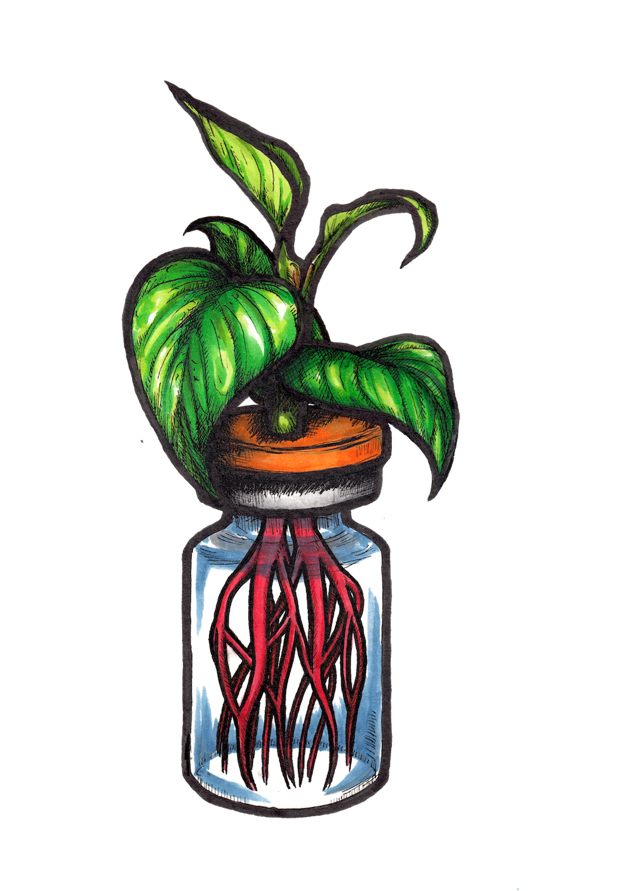
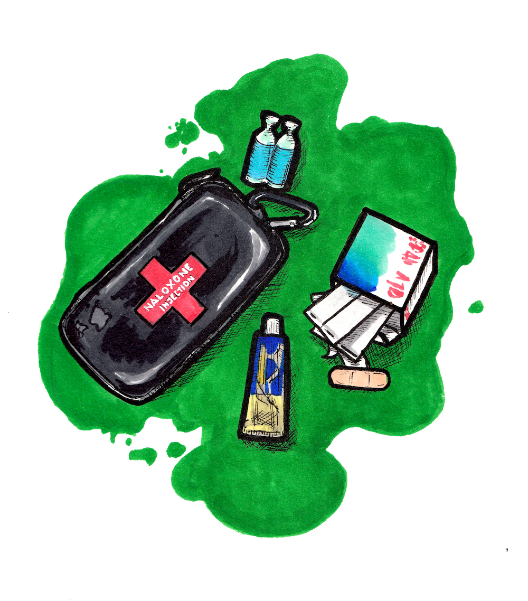
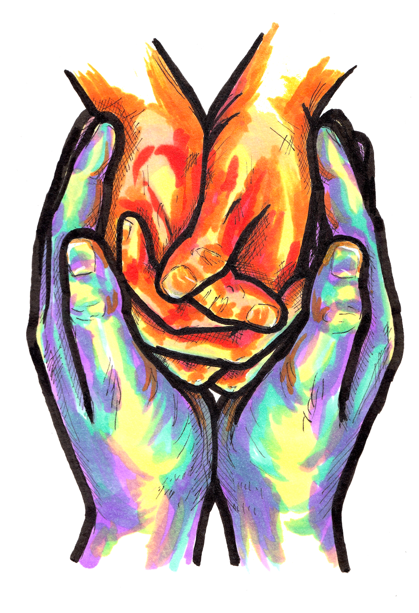
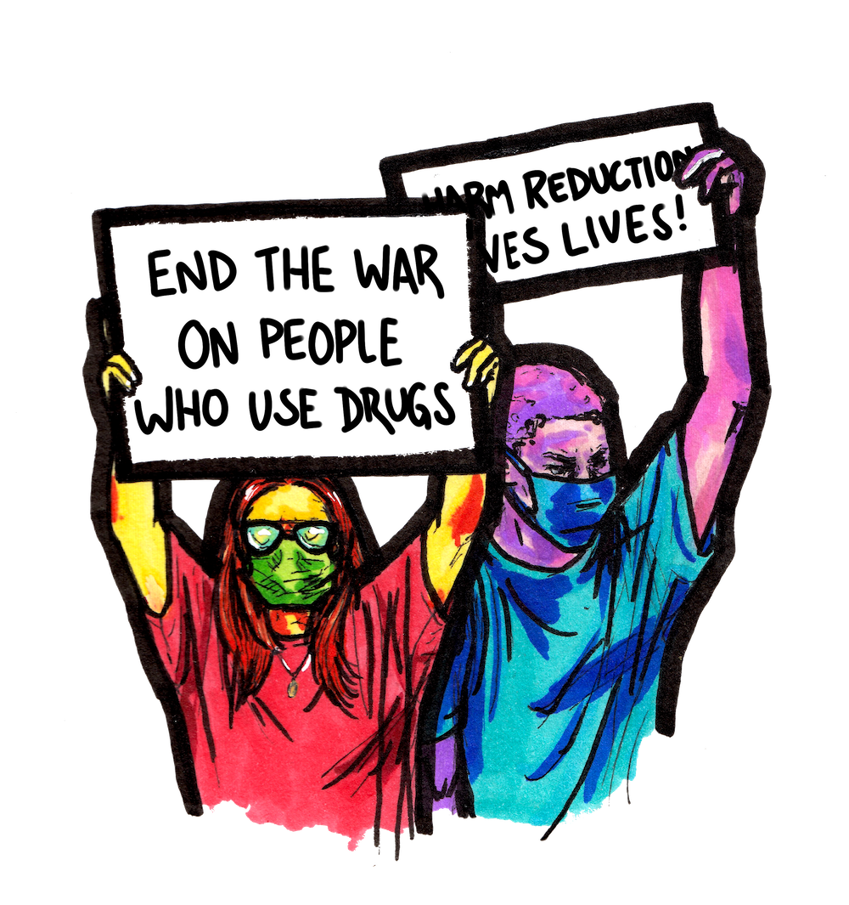

“Harm reduction refers to interventions aimed at reducing the negative effects of health behaviors without necessarily extinguishing the problematic health behaviors completely.”
(Hawk et al., 2017)
The Language of Harm Reduction
Language shapes attitudes. Attitudes shape policy. Policy shapes our societal reality.
Harm reduction healthcare strategies for drug/substance use aim to acknowledge the shortcomings of abstinence-only treatment methods for individuals with substance use disorders and provide a better quality of healthcare for those in active use. These strategies aim to remove moral judgement around –or destigmatize- substance use, as this stigma has been shown to contribute to worsened healthcare outcomes for patients (Hawk et al., 2017), and instead provide more pragmatic healthcare options.
Illustration by Mike Hooves
The language of harm reduction also focuses on decreasing the moralization of substance use, which directly impacts the treatment and wellbeing of individuals who use drugs. Being intentional with our wording when discussing substance use can also improve public understanding around issues of addiction. For example, it is more accurate to say drug poisoning rather than overdose. The word overdose implies that a correct dose exists, while also overlooking the likelihood that the user may be unaware of the exact formulation or nature of the substance consumed. In other words, the use of the term overdose can imply that an individual is personally responsible for over-consumption, where terms like drug poisoning or opioid poisoning “better reflect clinical reality” (Xie et al., 2017). Similarly, it is also more accurate to say substance use than substance abuse/misuse.
Opioid Poisoning
Naloxone - also known under the brand name Narcan - is a rescue agent, or medication which can be used to temporarily reverse an opioid poisoning. Some factors that may impact its effectiveness include the patient’s general health overall, the dosing/strength of substance consumed, and the time passed between substance consumption and rescue agent administration (Pergolizzi et al., 2021). In some cases, depending on the consumed substance’s resistance to the rescue agent, it may be necessary to administer multiple doses of naloxone.

Illustration by Penance Art
Naloxone will not have an effect on individuals who have not consumed opioids. It will not reverse drug poisonings by other types of drugs, but is also not harmful to administer in instances where it is unclear which substance type the individual has ingested.
In Alberta, many pharmacies and community sites supply naloxone kits and on-site training free of charge. For a map of where kits are available in Alberta, visit the Naloxone Distribution Map. Naloxone training is also free and accessible online.
Naloxone Distribution Map
In Alberta, many pharmacies and community sites supply naloxone kits and on-site training free of charge. For a map of where kits are available in Alberta, visit the Naloxone Distribution Map. Naloxone training is also free and accessible online.
It’s important to remember that although naloxone is undoubtedly a valuable harm reduction tool, it is not a preventative measure against the societal conditions and decades of impractical policy that have brought us to a crisis point with drug poisoning fatalities. Proactive measures, including reconceptualizing the way our healthcare system assists individuals with SUDs and people who use drugs, are necessary to prevent these tragedies.
It is crucial to note that the life-saving effects of naloxone are temporary, and immediate medical attention is required for an individual experiencing drug poisoning (CDC, 2018). In time sensitive and life-threatening emergencies, the best course of action at this time is to dial 911. Calling 211 in Edmonton, Alberta is appropriate for being referred to local community and social support services, which can be helpful for assisting distressed individuals in non-life-threatening situations.
Dangers of Using Alone

Illustration by Mike Hooves
Risks associated with using unregulated substances are increased when an individual -whether out of necessity or comfort- uses alone. Without another person around to provide or call for medical attention in case of an emergency -in which the individual may have lost consciousness or control of their motor functions- an individual’s chances of recovery from drug poisoning diminish.
Harm reduction programs supported by provincial health services, such as Safe Consumption Sites (SCSs), help to reduce risks associated with using alone. This, in turn, helps to reduce pressures on community emergency and healthcare services overall (Ng et al., 2017). Data collected on harm reduction programs, including SCSs, show strong evidence to support that they are cost-effective as well as pragmatic healthcare options. Treatment options such as programs which do not require abstaining from substance use have been shown to improve clinical outcomes for individuals to which this line of care is suited, while reducing costs of medical and social care (Hawk et al., 2017).
SCSs also help to reduce the spread of use-related infection due to practices such as providing clean, single-use supplies to individuals who use them, as well as appropriate modes of disposal for used supplies such as sharps bins. It is crucial that these programs receive adequate funding and support in order to be able to operate properly and be maximally effective, which has often not been the case.
As far as concerns over crime rates go, a recent study in Vancouver revealed that while crime rates in the city were relatively stable, rates of petty crime such as theft “declined significantly” in the district where a SCS was opened (Levengood et al., 2021). This suggests that Safe Consumption Sites have much to offer communities in terms of better meeting the health and safety needs of all community members.
SCSs also help to reduce the spread of use-related infection due to practices such as providing clean, single-use supplies to individuals who use them, as well as appropriate modes of disposal for used supplies such as sharps bins. It is crucial that these programs receive adequate funding and support in order to be able to operate properly and be maximally effective, which has often not been the case.
As far as concerns over crime rates go, a recent study in Vancouver revealed that while crime rates in the city were relatively stable, rates of petty crime such as theft “declined significantly” in the district where a SCS was opened (Levengood et al., 2021). This suggests that Safe Consumption Sites have much to offer communities in terms of better meeting the health and safety needs of all community members.
Safer Use
Harm reduction practices regarding substance use are meant to meet individuals where they’re at on their journey with drug use and recovery- a journey which is unique to each individual. There is always risk present when using unregulated substances, which is acknowledged by harm reduction practices. With that in mind, a few tools that are available to help reduce harm are listed below:

Illustration by Penance Art
Substance testing kits, including fentanyl strips, can be purchased and shipped to Canada through the U.S. harm reduction nonprofit organization “Dance Safe.” More information on these testing kits is available on their website dancesafe.org.
DANCE SAFE WEBSITE
Some shortcomings of using fentanyl tests include the possibility of showing false negatives in the presence of opioids with a slightly different chemical makeup -also known as different analogues- that could have similar or stronger effects to fentanyl. There is also something known as the “chocolate chip cookie” effect, which means the concentration and strength of the substance may vary depending on the small portion of the batch being tested. The accuracy of readings given by these tests should not be overstated.
It is also important to be aware that there are community members everywhere who intentionally use fentanyl for various reasons, including its accessibility and relative strength. These individuals are as deserving of pragmatic healthcare options as any other, and they must be included in campaigns against stigma. This reality also drives a need for a safe supply.
Using different substances in combination with one another can produce unexpected effects. A quick-reference guide that supplies very basic information on a range of substance combinations can be found here:
Drug Combinations Guide
It is also important to be aware that there are community members everywhere who intentionally use fentanyl for various reasons, including its accessibility and relative strength. These individuals are as deserving of pragmatic healthcare options as any other, and they must be included in campaigns against stigma. This reality also drives a need for a safe supply.
Using different substances in combination with one another can produce unexpected effects. A quick-reference guide that supplies very basic information on a range of substance combinations can be found here:
In addition to these tools, a “RESOURCES” page has been prepared, which contains links to established harm reduction organizations for those who would like to further their education in the area or access support personally.
VIEW RESOURCES PAGE
Community Care & Application of Harm Redux Philosophy

Illustration by Penance Art
Withdrawal symptoms experienced by those with SUDs can be severe and hard to predict (Plunkett & Peden, 2019), further complicating an individual’s relationship with recovery or abstaining from use. Abstinence is not the goal for everyone, and it’s important to recognize that all positive changes to health behaviours ultimately improve outcomes for patients.
Harm reduction philosophy and healthcare programs that utilize it help to construct “a moral context in which drug use is acknowledged but not judged and action is supportive rather than punitive” (Pauly, 2008). The effect this philosophy has on patients who receive this type of care is that they then express that they describe feeling valued as people, ultimately contributing to better healthcare outcomes (Hawk et al., 2017).
It is worth noting that medications for opioid use disorders, such as methodone or buprenorphine, are still stigmatized in society despite improving rates of “mortality, treatment retention, and remission” in people with opioid use disorders (Wakeman et al., 2020). The stigma surrounding the use of these medications may discourage some individuals from taking this treatment route, contributing to many people with OUDs going untreated altogether. For some, these medications are more effective in treating OUDs than behavioural interventions (Wakeman et al., 2020).
It is worth noting that medications for opioid use disorders, such as methodone or buprenorphine, are still stigmatized in society despite improving rates of “mortality, treatment retention, and remission” in people with opioid use disorders (Wakeman et al., 2020). The stigma surrounding the use of these medications may discourage some individuals from taking this treatment route, contributing to many people with OUDs going untreated altogether. For some, these medications are more effective in treating OUDs than behavioural interventions (Wakeman et al., 2020).
Advocating for Policy Change
To combat the numbers of opioid poisonings and mitigate some of the harms done to over-policed marginalized communities by discriminatory application of laws criminalizing drugs, it is necessary that policy shifts are made to take further steps towards decriminalization.

Illustration by Penance Art
Sound radical?
Well, it’s already happening. For example, starting January 31st, 2023, British Columbia is removing possession charges for up to 2.5 grams of certain illicit substances (BC Gov News, 2022). The exemption, which the province applied for federally, is currently set to be in effect until 2026. Under the new policy, law enforcement will neither arrest nor charge individuals for possession within the 2.5 gram limit, and rather than confiscating the drug they are instructed to “offer information on available health and social supports and will help with referrals when requested” (BC Gov News, 2022). This shift is being made with the intention of building of a “continuum of care” (BC Gov News, 2022), which should help to bridge some gaps when it comes to community assistance for street-involved and otherwise marginalized individuals accessing addiction supports.
The New Democratic Party, Liberal and the Green federal parties’ platforms currently -as of August, 2022- state that they would intend to invest in educational anti-stigma campaigns, as well as strengthen public funding for evidence-based treatments of problematic substance use that don’t necessarily aim for long-term abstinence. The Conservative party opts for what they term a “recovery based” strategy which has reduced funding and access to harm reduction programs like Safe Consumption Sites - a strategy that has proven disastrous for Albertans, with thousands of lives lost to drug poisonings since the party took power in April 2019 (CBC, 2021).
It is our responsibility as citizens and neighbours to stay informed on these important platforms and get involved when possible. One of many great starting points for getting involved is to find out who your city councillor is and send them an email stating your concerns about the lack of accessible, pragmatic healthcare options for individuals with substance use disorders, as well as why you believe it is necessary to increase funding for these vital harm reduction programs.
Find your councillor in Edmonton:
https://www.edmonton.ca/city_government/city_organization/city-councillors
Other important figures to voice concern to provincially would be politicians who are currently appointed to the Alberta Ministry of Health. Their contact information is also available on the Alberta provincial website.
https://www.alberta.ca/health.aspx
Contact Your Councillor
Contact AB Ministry of Health
Well, it’s already happening. For example, starting January 31st, 2023, British Columbia is removing possession charges for up to 2.5 grams of certain illicit substances (BC Gov News, 2022). The exemption, which the province applied for federally, is currently set to be in effect until 2026. Under the new policy, law enforcement will neither arrest nor charge individuals for possession within the 2.5 gram limit, and rather than confiscating the drug they are instructed to “offer information on available health and social supports and will help with referrals when requested” (BC Gov News, 2022). This shift is being made with the intention of building of a “continuum of care” (BC Gov News, 2022), which should help to bridge some gaps when it comes to community assistance for street-involved and otherwise marginalized individuals accessing addiction supports.
The New Democratic Party, Liberal and the Green federal parties’ platforms currently -as of August, 2022- state that they would intend to invest in educational anti-stigma campaigns, as well as strengthen public funding for evidence-based treatments of problematic substance use that don’t necessarily aim for long-term abstinence. The Conservative party opts for what they term a “recovery based” strategy which has reduced funding and access to harm reduction programs like Safe Consumption Sites - a strategy that has proven disastrous for Albertans, with thousands of lives lost to drug poisonings since the party took power in April 2019 (CBC, 2021).
It is our responsibility as citizens and neighbours to stay informed on these important platforms and get involved when possible. One of many great starting points for getting involved is to find out who your city councillor is and send them an email stating your concerns about the lack of accessible, pragmatic healthcare options for individuals with substance use disorders, as well as why you believe it is necessary to increase funding for these vital harm reduction programs.
Find your councillor in Edmonton:
https://www.edmonton.ca/city_government/city_organization/city-councillors
Other important figures to voice concern to provincially would be politicians who are currently appointed to the Alberta Ministry of Health. Their contact information is also available on the Alberta provincial website.
https://www.alberta.ca/health.aspx